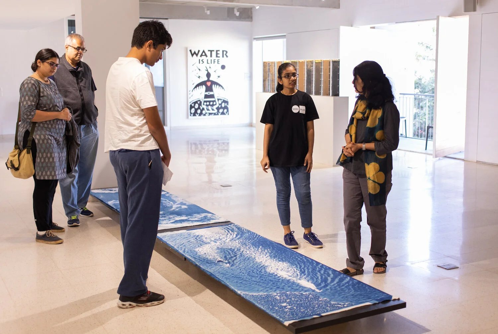
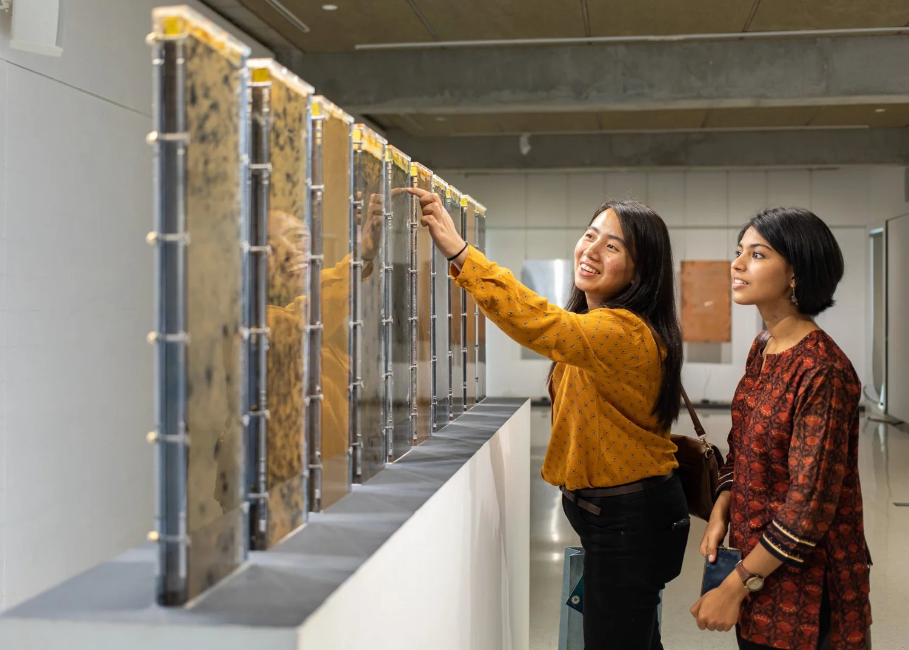
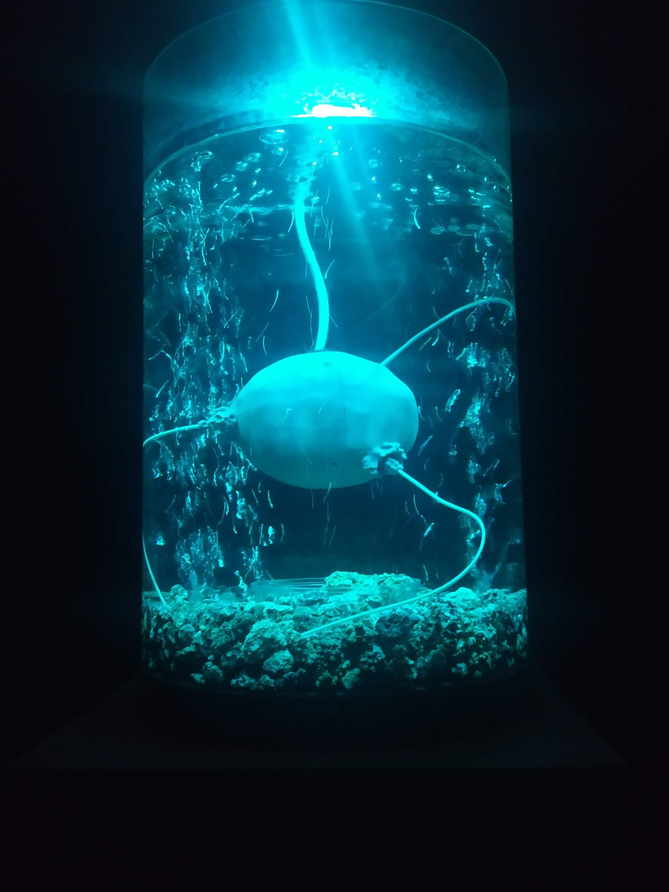
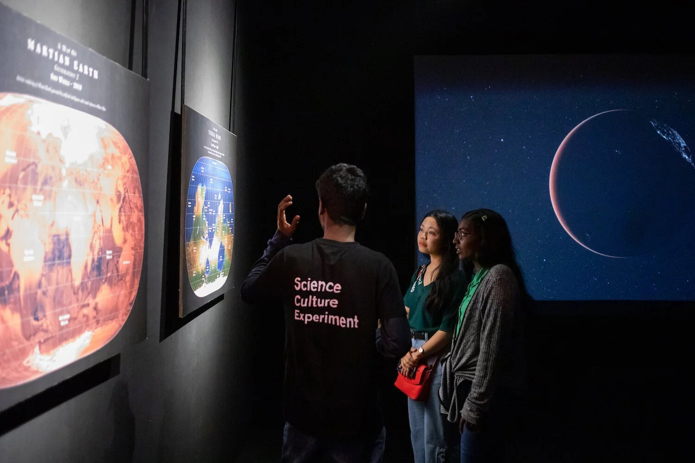
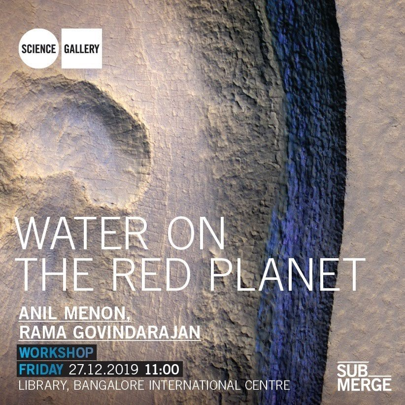
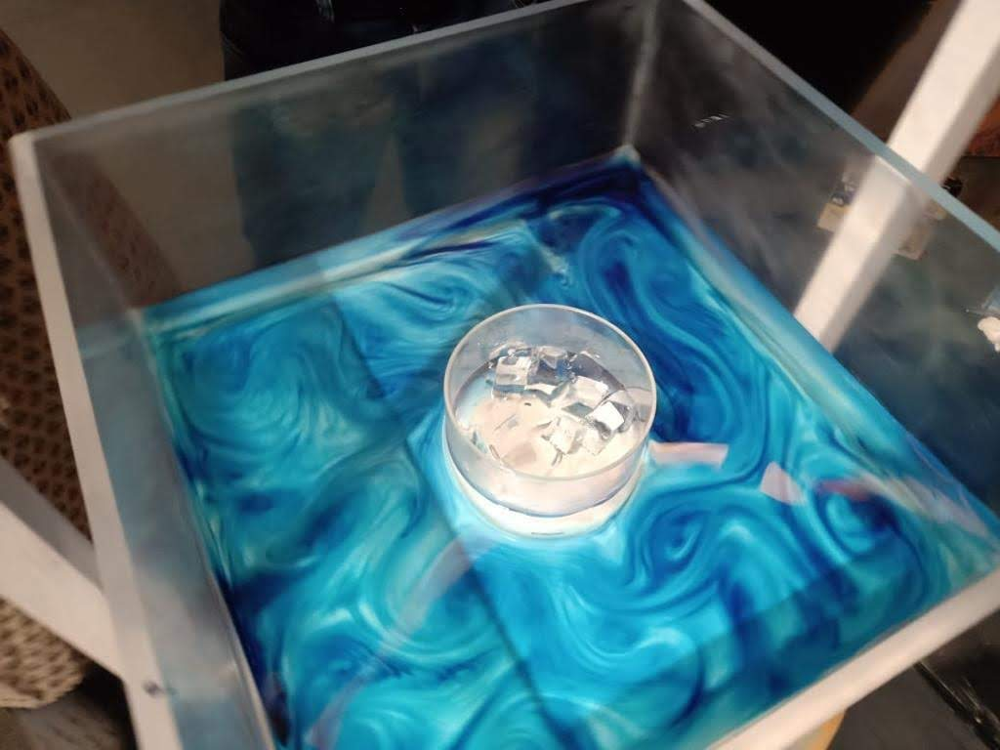
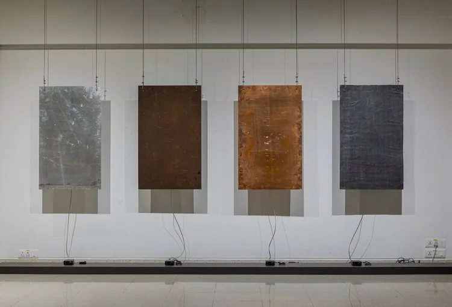
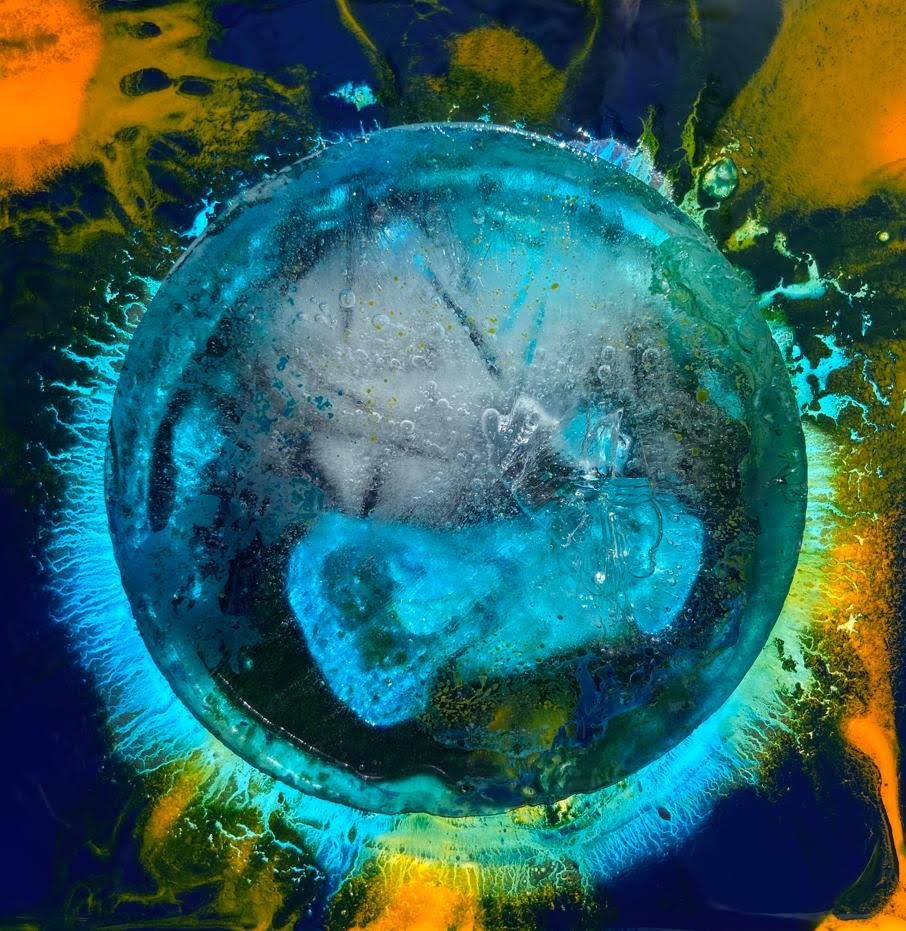
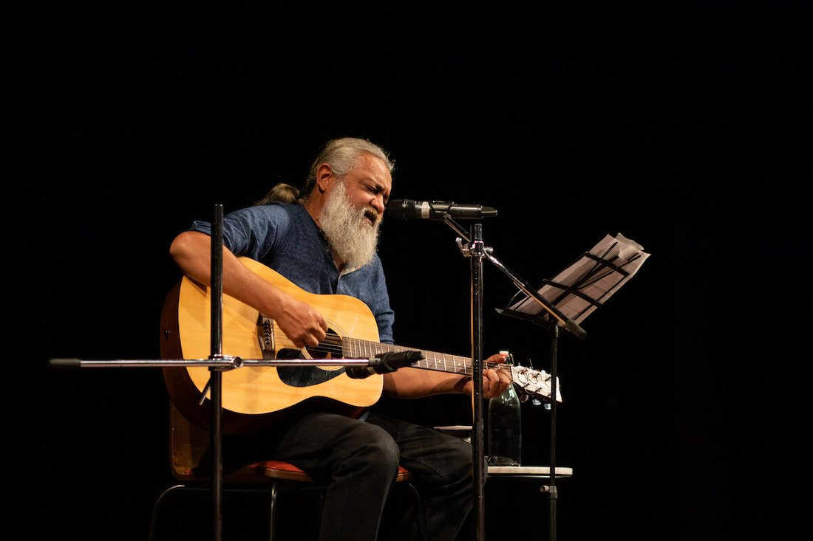

SUBMERGE
Diving into the weird world of water.

Azure · Chirantan Khastgir
- ROLE
- Curation and programming
- WHEN
- 15 December 2019 – 30 January 2020
- WHERE
- Bangalore International Centre
- PART OF
- Government of Karnataka, Year of Water
Geologists, hydrologists, artists, engineers, ecologists, historians and storytellers telling a new story of water.
SUBMERGE was the first large-scale exhibition I developed at Science Gallery Bengaluru. It opened during Karnataka's water crisis and featured the Smithsonian's H2O Today, facilitated by the US Consulate, Chennai.
Water is weird
Water is so familiar that we forget how strange it is. SUBMERGE started from that strangeness and widened out to water as a socio-political-scientific object: monsoons and models, mud and microbes, puddles, cities and drought.
Works like Anna Dumitriu and Alex May's ArchaeaBot: A Post Climate Change, Post Singularity Life-form, Jenifer Wightman's living mud columns in Munsell Richter and Brian House's Animas sat beside the monsoon research of G.S. Bhat and Debasis Sengupta, so that art and research could question each other.



One artwork became the starting point for a whole programme of research and play.
Programming the process
Shi Weili's Terra Mars used neural networks to swap the faces of Earth and Mars. It became the catalyst for a series of workshops for young people: with GIS specialists, with data scientists, and one that paired speculative fiction author Anil Menon with Dr Rama Govindarajan to imagine water on the Red Planet.





EXHIBITS & ARTISTS
- 01FrankenShrimpShashi Thutupalli
- 02ArchaeaBotAnna Dumitriu & Alex May
- 03The Sounds TapperSteven Tevels
- 04DiagenesisIvan Macera
- 05ArgusHarpreet Sareen
- 06Street Puddle FountainOren Ailam
- 07Munsell RichterJenifer Wightman
- 08AnimasBrian House
- 09Grow CansSuresh Kumar
- 10AzureChirantan Khastgir
- 11People and WaterJyoti Bhatt, T.S. Satyan · MAP collection
- 12The Monsoon Experiment & The Rotating TableG.S. Bhat, Debasis Sengupta
- 13H2O TodaySmithsonian · US Consulate Chennai
- 14Terra Mars SeriesShi Weili
TEAM
CREDITS & SUPPORT
Presented by